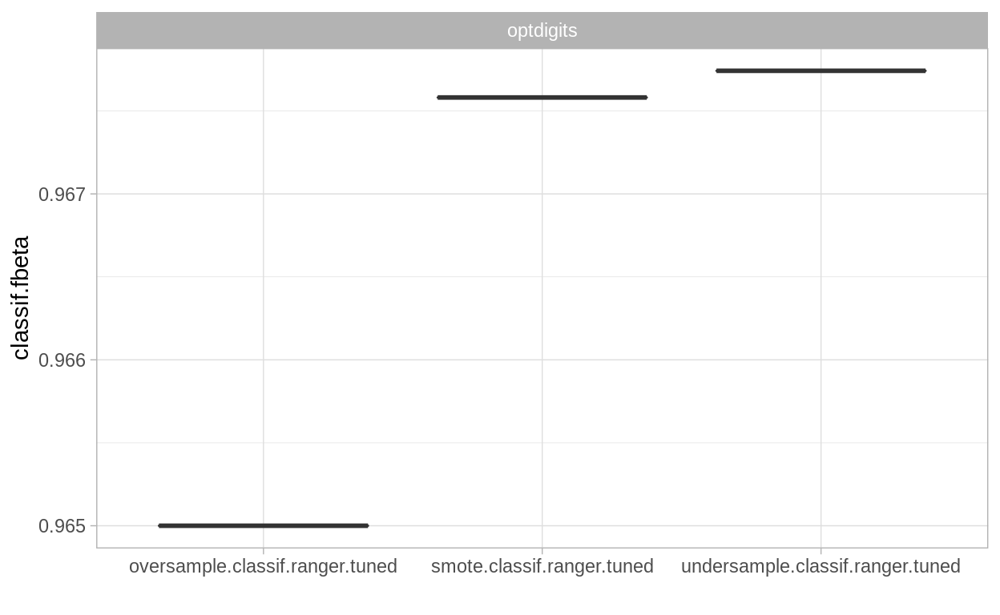
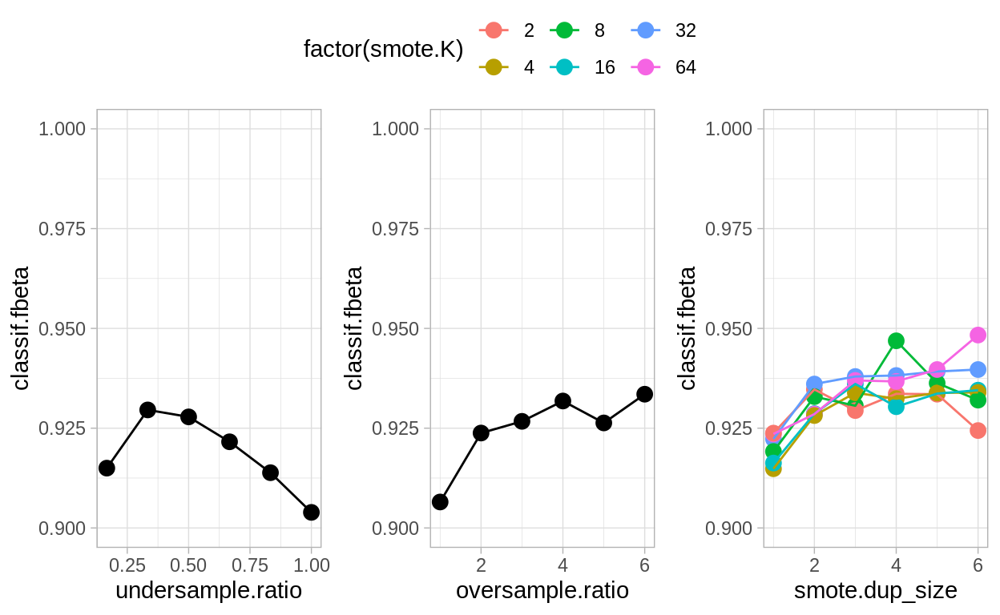

This use case compares different approaches to handle class imbalance for the optdigits (https://www.openml.org/d/980) binary classification data set using the mlr3 package.
This use case compares different approaches to handle class imbalance for the optdigits binary classification data set using the mlr3 package. We mainly focus on undersampling the majority class, oversampling the minority class, and the SMOTE imbalance correction (Chawla et al. 2002) that enriches the minority class with synthetic data. The use case requires prior knowledge in basic ML concepts (issues imbalanced data, hyperparameter tuning, nested cross-validation). The R packages mlr3, mlr3pipelines and mlr3tuning will be used. You can find most of the content here also in the mlr3book explained in a more detailed way.
These steps are performed:
OpenMLGraphs (undersampling, oversampling and SMOTE) with mlr3pipelinesGraph together with a learner using mlr3tuningGraph and visualize the results using mlr3vizlibrary("mlr3") # mlr3 base package
library("mlr3misc") # contains some helper functions
library("mlr3pipelines") # create ML pipelines
library("mlr3tuning") # tuning ML algorithms
library("mlr3learners") # additional ML algorithms
library("mlr3viz") # autoplot for benchmarks
library("paradox") # hyperparameter space
library("OpenML") # to obtain data sets
library("smotefamily") # SMOTE algorithm for imbalance correction
OpenML.org is an open machine learning platform, which allows users to share data, code and machine learning experiments. The OpenML R package can query available data sets using a filter-like approach by providing desired dataset characteristics like number.of.classes or number.of.features.
# get list of curated binary classification data sets (see https://arxiv.org/abs/1708.03731v2)
ds = listOMLDataSets(
number.of.classes = 2,
number.of.features = c(1, 100),
number.of.instances = c(5000, 10000)
)
# select imbalanced data sets (without categorical features as SMOTE cannot handle them)
ds = subset(ds, minority.class.size / number.of.instances < 0.2 &
number.of.symbolic.features == 1)
ds
data.id name version status format tags majority.class.size
13 976 JapaneseVowels 2 active ARFF 8347
15 980 optdigits 2 active ARFF 5048
19 1021 page-blocks 2 active ARFF 4913
20 1056 mc1 1 active ARFF 9398
21 1069 pc2 1 active ARFF 5566
27 40900 Satellite 1 active ARFF 5025
max.nominal.att.distinct.values minority.class.size number.of.classes
13 2 1614 2
15 2 572 2
19 2 560 2
20 2 68 2
21 2 23 2
27 2 75 2
number.of.features number.of.instances
13 15 9961
15 65 5620
19 11 5473
20 39 9466
21 37 5589
27 37 5100
number.of.instances.with.missing.values number.of.missing.values
13 0 0
15 0 0
19 0 0
20 0 0
21 0 0
27 0 0
number.of.numeric.features number.of.symbolic.features
13 14 1
15 64 1
19 10 1
20 38 1
21 36 1
27 36 1# pick one data set from list above
d = getOMLDataSet(980)
d
Data Set 'optdigits' :: (Version = 2, OpenML ID = 980)
Default Target Attribute: binaryClassAfter downloading the chosen data set, we create an mlr3 classification task:
# make sure target is a factor and create mlr3 tasks
data = as.data.frame(d)
data[[d$target.features]] = as.factor(data[[d$target.features]])
task = TaskClassif$new(
id = d$desc$name, backend = data,
target = d$target.features)
task
<TaskClassif:optdigits> (5620 x 65)
* Target: binaryClass
* Properties: twoclass
* Features (64):
- dbl (64): input1, input10, input11, input12, input13, input14,
input15, input16, input17, input18, input19, input2, input20,
input21, input22, input23, input24, input25, input26, input27,
input28, input29, input3, input30, input31, input32, input33,
input34, input35, input36, input37, input38, input39, input4,
input40, input41, input42, input43, input44, input45, input46,
input47, input48, input49, input5, input50, input51, input52,
input53, input54, input55, input56, input57, input58, input59,
input6, input60, input61, input62, input63, input64, input7,
input8, input9Quick overview of the data:
skimr::skim(data)
| Name | data |
| Number of rows | 5620 |
| Number of columns | 65 |
| _______________________ | |
| Column type frequency: | |
| factor | 1 |
| numeric | 64 |
| ________________________ | |
| Group variables | None |
Variable type: factor
| skim_variable | n_missing | complete_rate | ordered | n_unique | top_counts |
|---|---|---|---|---|---|
| binaryClass | 0 | 1 | FALSE | 2 | N: 5048, P: 572 |
Variable type: numeric
| skim_variable | n_missing | complete_rate | mean | sd | p0 | p25 | p50 | p75 | p100 | hist |
|---|---|---|---|---|---|---|---|---|---|---|
| input1 | 0 | 1 | 0.00 | 0.00 | 0 | 0 | 0 | 0 | 0 | ▁▁▇▁▁ |
| input2 | 0 | 1 | 0.30 | 0.88 | 0 | 0 | 0 | 0 | 8 | ▇▁▁▁▁ |
| input3 | 0 | 1 | 5.39 | 4.67 | 0 | 1 | 5 | 9 | 16 | ▇▃▃▂▂ |
| input4 | 0 | 1 | 11.82 | 4.26 | 0 | 10 | 13 | 15 | 16 | ▁▁▂▃▇ |
| input5 | 0 | 1 | 11.58 | 4.46 | 0 | 9 | 13 | 15 | 16 | ▁▁▂▃▇ |
| input6 | 0 | 1 | 5.59 | 5.63 | 0 | 0 | 4 | 10 | 16 | ▇▂▂▂▃ |
| input7 | 0 | 1 | 1.38 | 3.36 | 0 | 0 | 0 | 0 | 16 | ▇▁▁▁▁ |
| input8 | 0 | 1 | 0.14 | 1.05 | 0 | 0 | 0 | 0 | 16 | ▇▁▁▁▁ |
| input9 | 0 | 1 | 0.00 | 0.09 | 0 | 0 | 0 | 0 | 5 | ▇▁▁▁▁ |
| input10 | 0 | 1 | 1.97 | 3.10 | 0 | 0 | 0 | 3 | 16 | ▇▁▁▁▁ |
| input11 | 0 | 1 | 10.51 | 5.43 | 0 | 6 | 12 | 15 | 16 | ▃▂▂▂▇ |
| input12 | 0 | 1 | 11.80 | 4.00 | 0 | 9 | 13 | 15 | 16 | ▁▂▂▃▇ |
| input13 | 0 | 1 | 10.51 | 4.79 | 0 | 7 | 11 | 15 | 16 | ▂▂▃▃▇ |
| input14 | 0 | 1 | 8.26 | 5.97 | 0 | 2 | 9 | 14 | 16 | ▇▂▃▃▇ |
| input15 | 0 | 1 | 2.09 | 3.92 | 0 | 0 | 0 | 2 | 16 | ▇▁▁▁▁ |
| input16 | 0 | 1 | 0.14 | 0.94 | 0 | 0 | 0 | 0 | 15 | ▇▁▁▁▁ |
| input17 | 0 | 1 | 0.00 | 0.10 | 0 | 0 | 0 | 0 | 5 | ▇▁▁▁▁ |
| input18 | 0 | 1 | 2.60 | 3.49 | 0 | 0 | 1 | 4 | 16 | ▇▂▁▁▁ |
| input19 | 0 | 1 | 9.68 | 5.83 | 0 | 4 | 12 | 15 | 16 | ▅▂▂▃▇ |
| input20 | 0 | 1 | 6.82 | 5.88 | 0 | 1 | 6 | 12 | 16 | ▇▃▂▂▅ |
| input21 | 0 | 1 | 7.16 | 6.15 | 0 | 1 | 6 | 13 | 16 | ▇▂▂▂▆ |
| input22 | 0 | 1 | 7.97 | 6.26 | 0 | 0 | 9 | 14 | 16 | ▇▂▂▃▇ |
| input23 | 0 | 1 | 1.96 | 3.48 | 0 | 0 | 0 | 3 | 16 | ▇▁▁▁▁ |
| input24 | 0 | 1 | 0.05 | 0.44 | 0 | 0 | 0 | 0 | 8 | ▇▁▁▁▁ |
| input25 | 0 | 1 | 0.00 | 0.03 | 0 | 0 | 0 | 0 | 1 | ▇▁▁▁▁ |
| input26 | 0 | 1 | 2.38 | 3.11 | 0 | 0 | 1 | 4 | 16 | ▇▂▁▁▁ |
| input27 | 0 | 1 | 9.19 | 6.15 | 0 | 3 | 11 | 15 | 16 | ▅▂▂▂▇ |
| input28 | 0 | 1 | 9.03 | 5.90 | 0 | 4 | 10 | 15 | 16 | ▅▂▂▃▇ |
| input29 | 0 | 1 | 9.75 | 6.24 | 0 | 3 | 12 | 16 | 16 | ▅▁▂▂▇ |
| input30 | 0 | 1 | 7.77 | 5.96 | 0 | 1 | 8 | 14 | 16 | ▇▃▃▃▇ |
| input31 | 0 | 1 | 2.33 | 3.64 | 0 | 0 | 0 | 4 | 16 | ▇▁▁▁▁ |
| input32 | 0 | 1 | 0.00 | 0.06 | 0 | 0 | 0 | 0 | 2 | ▇▁▁▁▁ |
| input33 | 0 | 1 | 0.00 | 0.03 | 0 | 0 | 0 | 0 | 1 | ▇▁▁▁▁ |
| input34 | 0 | 1 | 2.14 | 3.30 | 0 | 0 | 0 | 4 | 15 | ▇▁▁▁▁ |
| input35 | 0 | 1 | 7.66 | 6.28 | 0 | 0 | 8 | 14 | 16 | ▇▂▂▂▇ |
| input36 | 0 | 1 | 9.18 | 6.22 | 0 | 3 | 11 | 16 | 16 | ▅▂▂▂▇ |
| input37 | 0 | 1 | 10.33 | 5.92 | 0 | 6 | 13 | 16 | 16 | ▃▁▂▂▇ |
| input38 | 0 | 1 | 9.05 | 5.88 | 0 | 4 | 10 | 15 | 16 | ▅▂▂▃▇ |
| input39 | 0 | 1 | 2.91 | 3.50 | 0 | 0 | 1 | 6 | 14 | ▇▂▂▁▁ |
| input40 | 0 | 1 | 0.00 | 0.00 | 0 | 0 | 0 | 0 | 0 | ▁▁▇▁▁ |
| input41 | 0 | 1 | 0.02 | 0.27 | 0 | 0 | 0 | 0 | 7 | ▇▁▁▁▁ |
| input42 | 0 | 1 | 1.46 | 2.95 | 0 | 0 | 0 | 2 | 16 | ▇▁▁▁▁ |
| input43 | 0 | 1 | 6.59 | 6.52 | 0 | 0 | 4 | 14 | 16 | ▇▁▁▂▅ |
| input44 | 0 | 1 | 7.20 | 6.46 | 0 | 0 | 7 | 14 | 16 | ▇▂▂▂▆ |
| input45 | 0 | 1 | 7.84 | 6.30 | 0 | 1 | 8 | 14 | 16 | ▇▂▂▂▇ |
| input46 | 0 | 1 | 8.53 | 5.77 | 0 | 3 | 9 | 14 | 16 | ▆▂▃▃▇ |
| input47 | 0 | 1 | 3.49 | 4.36 | 0 | 0 | 1 | 7 | 16 | ▇▂▂▁▁ |
| input48 | 0 | 1 | 0.02 | 0.25 | 0 | 0 | 0 | 0 | 6 | ▇▁▁▁▁ |
| input49 | 0 | 1 | 0.01 | 0.25 | 0 | 0 | 0 | 0 | 10 | ▇▁▁▁▁ |
| input50 | 0 | 1 | 0.78 | 1.93 | 0 | 0 | 0 | 0 | 16 | ▇▁▁▁▁ |
| input51 | 0 | 1 | 7.75 | 5.66 | 0 | 2 | 8 | 13 | 16 | ▇▃▃▅▇ |
| input52 | 0 | 1 | 9.77 | 5.17 | 0 | 6 | 10 | 15 | 16 | ▃▃▃▃▇ |
| input53 | 0 | 1 | 9.65 | 5.31 | 0 | 5 | 10 | 15 | 16 | ▃▃▃▃▇ |
| input54 | 0 | 1 | 9.12 | 5.97 | 0 | 3 | 11 | 15 | 16 | ▅▂▂▃▇ |
| input55 | 0 | 1 | 3.74 | 4.91 | 0 | 0 | 1 | 7 | 16 | ▇▂▁▁▁ |
| input56 | 0 | 1 | 0.17 | 0.84 | 0 | 0 | 0 | 0 | 13 | ▇▁▁▁▁ |
| input57 | 0 | 1 | 0.00 | 0.02 | 0 | 0 | 0 | 0 | 1 | ▇▁▁▁▁ |
| input58 | 0 | 1 | 0.28 | 0.93 | 0 | 0 | 0 | 0 | 10 | ▇▁▁▁▁ |
| input59 | 0 | 1 | 5.76 | 5.02 | 0 | 1 | 5 | 10 | 16 | ▇▃▃▂▂ |
| input60 | 0 | 1 | 11.99 | 4.35 | 0 | 10 | 13 | 15 | 16 | ▁▁▁▃▇ |
| input61 | 0 | 1 | 11.57 | 4.98 | 0 | 9 | 13 | 16 | 16 | ▂▁▁▃▇ |
| input62 | 0 | 1 | 6.72 | 5.82 | 0 | 0 | 6 | 12 | 16 | ▇▂▂▃▅ |
| input63 | 0 | 1 | 2.09 | 4.05 | 0 | 0 | 0 | 2 | 16 | ▇▁▁▁▁ |
| input64 | 0 | 1 | 0.25 | 1.42 | 0 | 0 | 0 | 0 | 16 | ▇▁▁▁▁ |
In mlr3pipelines, there is a classbalancing and a smote pipe operator that can be combined with any learner. Below, we define the undersampling, oversampling and SMOTE PipeOps. All three imbalance correction methods have hyperparameters to control the degree of class imbalance. We apply the PipeOps to the current task with specific hyperparameter values to see how the class balance changes:
# check original class balance
table(task$truth())
P N
572 5048 # undersample majority class (relative to majority class)
po_under = po("classbalancing",
id = "undersample", adjust = "major",
reference = "major", shuffle = FALSE, ratio = 1 / 6)
# reduce majority class by factor '1/ratio'
table(po_under$train(list(task))$output$truth())
P N
572 841 # oversample majority class (relative to majority class)
po_over = po("classbalancing",
id = "oversample", adjust = "minor",
reference = "minor", shuffle = FALSE, ratio = 6)
# enrich minority class by factor 'ratio'
table(po_over$train(list(task))$output$truth())
P N
3432 5048 # SMOTE enriches the minority class with synthetic data
po_smote = po("smote", dup_size = 6)
# enrich minority class by factor (dup_size + 1)
table(po_smote$train(list(task))$output$truth())
P N
4004 5048 AutoTunerWe combine the PipeOps with a learner (here ranger) to make each pipeline graph behave like a learner:
# create random forest learner
lrn = lrn("classif.ranger", num.trees = 50)
# combine learner with pipeline graph
lrn_under = GraphLearner$new(po_under %>>% lrn)
lrn_over = GraphLearner$new(po_over %>>% lrn)
lrn_smote = GraphLearner$new(po_smote %>>% lrn)
We define the search space in order to tune the hyperparameters of the class imbalance methods.
# define parameter search space for each method
ps_under = ParamSet$new(list(ParamDbl$new("undersample.ratio", lower = 1 / 6, upper = 1)))
ps_over = ParamSet$new(list(ParamDbl$new("oversample.ratio", lower = 1, upper = 6)))
ps_smote = ParamSet$new(list(
ParamInt$new("smote.dup_size", lower = 1, upper = 6),
ParamInt$new("smote.K", lower = 1, upper = 6)
))
# makes sure we use numbers to the power of two to better explore the parameter space
ps_smote$trafo = function(x, param_set) {
x$smote.K = round(2^(x$smote.K))
x
}
We create an AutoTuner class from the learner to tune the graph (random forest learner + imbalance correction method) based on a 3-fold CV using the classif.fbeta as performance measure. To keep runtime low, we define the search space only for the imbalance correction method. However, one can also jointly tune the hyperparameter of the learner along with the imbalance correction method by extending the search space with the learner’s hyperparameters. Note that SMOTE has two hyperparameters K and dup_size. While K changes the behavior of the SMOTE algorithm, dup_size will affect oversampling rate. To focus on the effect of the oversampling rate on the performance, we will consider SMOTE with K = 2 as a different imbalance correction method as SMOTE with K = 4 (and so on). Hence, we use grid search with 5 different hyperparameter configurations for the undersampling method, the oversampling method and each SMOTE variant for tuning:
inner_cv3 = rsmp("cv", folds = 3)
measure = msr("classif.fbeta")
learns = list(
AutoTuner$new(
learner = lrn_under,
resampling = inner_cv3,
measure = measure,
search_space = ps_under,
terminator = trm("none"),
tuner = tnr("grid_search", resolution = 6)
),
AutoTuner$new(
learner = lrn_over,
resampling = inner_cv3,
measure = measure,
search_space = ps_over,
terminator = trm("none"),
tuner = tnr("grid_search", resolution = 6)
),
AutoTuner$new(
learner = lrn_smote,
resampling = inner_cv3,
measure = measure,
search_space = ps_smote,
terminator = trm("none"),
tuner = tnr("grid_search", resolution = 6)
)
)
names(learns) = mlr3misc::map(learns, "id")
names(learns)
[1] "undersample.classif.ranger.tuned" "oversample.classif.ranger.tuned"
[3] "smote.classif.ranger.tuned" AutoTunerThe AutoTuner is a fully tuned graph that behaves like a usual learner. For the tuning a 3-fold CV is used. Now, we use the benchmark function to compare the tuned class imbalance pipeline graphs based on a holdout for the outer evaluation:
# NOTE: This code runs about 5 minutes
outer_resampling = rsmp("holdout")
design = benchmark_grid(
tasks = task,
learners = learns,
resamplings = outer_resampling
)
print(design)
task learner resampling
1: <TaskClassif[45]> <AutoTuner[37]> <ResamplingHoldout[19]>
2: <TaskClassif[45]> <AutoTuner[37]> <ResamplingHoldout[19]>
3: <TaskClassif[45]> <AutoTuner[37]> <ResamplingHoldout[19]>bmr$aggregate(measure)
nr resample_result task_id learner_id
1: 1 <ResampleResult[21]> optdigits undersample.classif.ranger.tuned
2: 2 <ResampleResult[21]> optdigits oversample.classif.ranger.tuned
3: 3 <ResampleResult[21]> optdigits smote.classif.ranger.tuned
resampling_id iters classif.fbeta
1: holdout 1 0.9651741
2: holdout 1 0.9571788
3: holdout 1 0.9651741# one value per boxplot since we used holdout as outer resampling
autoplot(bmr, measure = measure)

With store_models = TRUE we allow the benchmark function to store each single model that was computed during tuning. Therefore, we can plot the tuning path of the best learner from the subsampling iterations:
library(ggplot2)
utune_path = bmr$data$learners()[[2]][[1]]$model$tuning_instance$archive$data()
utune_gg = ggplot(utune_path, aes(x = undersample.ratio, y = classif.fbeta)) +
geom_point(size = 3) +
geom_line() + ylim(0.9, 1)
stune_path = bmr$data$learners()[[2]][[2]]$model$tuning_instance$archive$data()
stune_gg = ggplot(stune_path, aes(
x = smote.dup_size,
y = classif.fbeta, col = factor(smote.K))) +
geom_point(size = 3) +
geom_line() + ylim(0.9, 1)
otune_path = bmr$data$learners()[[2]][[3]]$model$tuning_instance$archive$data()
otune_gg = ggplot(otune_path, aes(x = oversample.ratio, y = classif.fbeta)) +
geom_point(size = 3) +
geom_line() + ylim(0.9, 1)
library(ggpubr)
ggarrange(utune_gg, otune_gg, stune_gg, common.legend = TRUE, nrow = 1)

The results show that oversampling the minority class (for simple oversampling as well as for SMOTE) and undersampling the majority class yield a better performance for this specific data set.
In this post, we tuned and compared 5 different settings of sampling ratios for the undersampling method, the oversampling method and different SMOTE variants (using different values of K nearest neighbors during the sampling process). If you want to know more, read the mlr3book and the documentation of the mentioned packages.
Chawla, N. V., K. W. Bowyer, L. O. Hall, and W. P. Kegelmeyer. 2002. “SMOTE: Synthetic Minority over-Sampling Technique.” Journal of Artificial Intelligence Research 16 (June): 321–57. https://doi.org/10.1613/jair.953.
For attribution, please cite this work as
Casalicchio (2020, March 30). mlr3gallery: Imbalanced data handling with mlr3. Retrieved from https://mlr3gallery.mlr-org.com/posts/2020-03-30-imbalanced-data/
BibTeX citation
@misc{casalicchio2020imbalanced,
author = {Casalicchio, Giuseppe},
title = {mlr3gallery: Imbalanced data handling with mlr3},
url = {https://mlr3gallery.mlr-org.com/posts/2020-03-30-imbalanced-data/},
year = {2020}
}